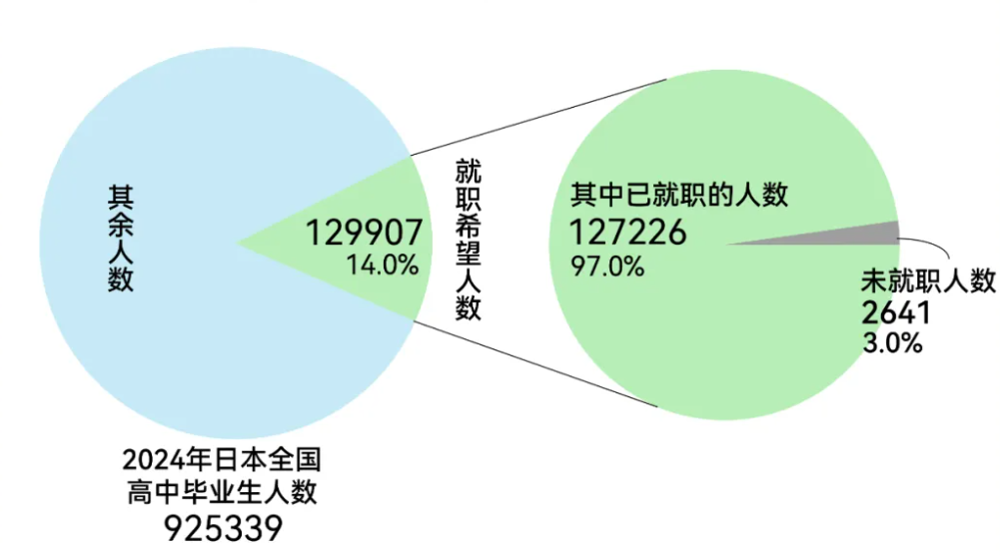

“本科毕业生就业率达到 98.1%，人均起薪达到 22.6 万日元（折合人民币 10567 元），较去年涨了 4%”。
近期，国内多家媒体，密集描绘了 2024 年日本就业市场“日企抢人”“毕业生任意挑工作”等景气图景。仿佛日本一夜间结束了“就职冰河期”，迎来了“就职反选时代”。 根据日本文部科学省的统计，98.1% 的就业率，是自 2004 年来的新高。今年的日本应届生们，似乎遇上了一个二十年来，最容易就业的年头。
事实果真如此吗？老龄化严重、人口连续多年减少，年轻人就可以没那么卷了吗？
能反选公司早不是新闻，
20年来毕业生岗位供过于求
20年来毕业生岗位供过于求
日本应届生就业，往往在毕业 1 年前的 3、4 月份，就要开始全力以赴找工作。日语称之为“就活”（就职活动），每个应届毕业生的“就活”，大概要持续半年到一年。
去年 8 月，日本就业信息网站“Mynavi”对 1982 名应届毕业生进行调查后发现：83.9% 的毕业生已经获得了“内定”（即公司正式录取 offer），平均“内定”数为 2.5， 也就是说他们找工作还不到半年，每人平均就有 2.5 家企业可供选择。
民间研究机构“Recruit Works研究所”持续统计了日本劳动力市场的供需情况，统计时间在每年 4 月底。该研究所在报告中，使用了“求人倍率”这个统计指标。
所谓“求人倍率”，就是市场上职位数量和求职者人数的比率。若“求人倍率”大于 1，则说明市场上的职位比求职者多；小于 1，则说明该岗位竞争者超过 1 人。
根据该研究所的统计， 从 2004 年到 2024 年，日本应届生劳动力市场的求人倍率，从来没有小于过 1。这说明 20 年来，日本的应届生所面对的整体求职竞争压力是不大的。
图表：20年来日本应届生劳动力供需情况
⭕应届生整体压力不大，除非想进巨型企业
注：求人倍率统计方法为：求人倍率＝市场人力需求总数/应届生希望就职人数
其中“人力需求总数”和“希望就职人数”为该研究机构通过日本文部科学省等官方机构的数据推算得出
其中“人力需求总数”和“希望就职人数”为该研究机构通过日本文部科学省等官方机构的数据推算得出
⭕行业之间人力需求差距十分悬殊
数据来源：日本民间研究机构日本民间研究机构“Recruit Works研究所”相关调查
举例来说：2024 年日本的大学毕业生，如果选择 300 人以下的小企业就职，那简直是“易如反掌”： 随便挑一家公司，平均就会有 6.19 个职位等着应聘者。只要去不超过 5000 人的公司， 那么岗位的竞争都不会太激烈，平均每个人对应岗位有 1.14 个。
然而，数据所呈现的另一面是： 日本的巨头公司、金融及情报行业（类似于中国的 IT 业）也存在“内卷”的情况。
从数据来看，一名毕业生如果想要进超过 5000 人的企业，大概每个岗位平均会有其他两名候选人和他竞争。 若是要去金融业公司，则大概是五个人竞争一个职位。但这听上去，比中国的大学生目前找工作的竞争压力要小太多。
不过，日本毕业生想进头部企业，那么要经受的考验和中国的社交媒体、求职社区网站上所描述的 “大厂面试”流程不遑多让，行业龙头更有“百里挑一”的层层筛选机制。
以日本出版业巨头讲谈社 2023 年的招聘流程为例：3747 位申请者中，最终通过面试得到 offer 的仅有 23 人， 竞争倍率达到 162.9（162.9 个人争夺 1 个offer）。从 2023 年 2 月到 4 月，申请者们要经历长达两个月的笔试 和密集面试，通过难度相当之大。
讲谈社官网显示，2023 年 3747 个申请者，最后只有 23 人通过面试
资料来源：讲谈社官网
资料来源：讲谈社官网
就业率十年95%以上，
但存在一定统计陷阱
但存在一定统计陷阱
从整体数据上看，应届生除非想进大公司，否则工作并不会太难找。日本的官方就业率数据，也很好地说明了这点。
然而从 2014 年开始，日本的就业率数据，已经完美到令人生疑。
2024 年，98.1% 的就业率数据，由日本的文部科学省调查所得出。 即使在全球疫情最严重的 2022 年，日本大学、高中毕业生的就业率仍然保持在 95% 以上。
然而根据笔者分析，由于样本抽取和调查实施方法的缘故， 统计得到的数据比实际要偏高。其主要原因为调查统计的分母，为调查者主观定义的 “就职希望人数”。
日本毕业生就业率
连续十年达95%以上
连续十年达95%以上
2024年日本高中毕业生98%的就业率是怎么算出来的？

| 数据来源：日本文部科学省
根据文部科学省所述的调查方法，无论是大学生还是高中生，其就业率的计算公式为，就业率 = 实际已就业人数 /希望就职者。而对所谓“希望就职者”的界定，其实际操作中存在许多容易造成误差的可能。
对于高中毕业生来说，文部科学省对今年全日本毕业的 92 万高中生都进行了普查，其中在 3 月底高中生毕业后 （日本高中生一般都在 3 月初毕业），12 多万填写自己“希望就职”的高中生中，仅有 2641 人没有找到工作。
而对于大学生来说，也存在相似的统计问题，许多未就业者，既不一定打算就业，也或许因不积极找工作而不被纳入到统计中。
因此， 一些日本的教育工作研究者，对家长和毕业生提出忠告，希望他们关注大学的“实际就业率” （实际就业率 = 实际已就业人数/毕业生人数 - 升学人数）。
不过根据日本各大学自己统计的实际就业率来看，2023 年度许多学校的就业率，也仅是比 90% 低一点。
值得一提的是，从数据上来看，并不是越拔尖、越难考的大学，实际就业率就越高。如地方性专门大学神户市看护大学，2023 年实际就业率达到 99%。
据教育研究者小林哲夫的随笔所述：实际就业率高的大学往往是培养护士、药剂师和其他专业化人才的地区性大学/小型大学。 这些小型大学里，教职员工们更加关心学生的就业，他们熟识学生的名字和面孔，并陪伴学生们寻找工作。 如果学生们求职过程中遇到困难而灰心丧气，这些大学的教职员工，会在一旁“全程陪伴”鼓励他们。
这些情况，很能引起笔者的深思，数据的对比充分说明了： 不论在哪个国家，在求职这个问题上，与其削尖脑袋去内卷高大上的职位，不如真正地将个人的优势，与时代的呼唤结合， 并做出选择。

完美的数据和报道轰炸下，
应届生就职心态悄然改变
应届生就职心态悄然改变
整体来看，不管是想去小公司就职，还是期待去卷上天的大企业就职。2024 年，日本应届生的就职心态，发生了很微妙的变化。
日本就业信息网站“Mynavi”在近年做了一个非常“日本”的调研：让接受调查的应届生（1682 人），每年选择一个汉字，来表达他们求职时的心境。 2021 年和 2022 年，选择人数最多的汉字都是“苦”字，然而到了 2023 年，“苦”字在调查中下调一位，排名第二。 排名第一的汉字变成了“乐”字（“乐”字在日语中，有轻松、简单的含义）。
| 2023 年就职汉字排行榜/资料来源：Mynavi 2023 年毕业生学生就职情况（8 月）
谈及为何会选择“乐”字，有应届生在调查里回复道：“我并不认为求职是一件艰难的事情，而是一种思考未来、 拓展梦想的有趣方式”。“和有趣的人一起干活，实在是很快乐”。“今年找工作真是从容不迫，不仅找到了工作， 而且这份工作与我的爱好并行不悖”。
笔者第一次读到这些感想时，不禁莞尔一笑，觉得这些年轻人“未被社会毒打过”的单纯感、悸动感， 让工作了几年的自己十分有感触。
大谈梦想、希望、前景的，不仅仅只有这些感到“轻松、快乐”的应届生。那些优秀的，经历了层层高压选拔的讲谈社被录取者们， 也在个人随想中，表明了一种乐观、向上的基调，来面对充满挑战的职场。
一位讲谈社被录取者（漫画编辑）在随笔中这么写道：“当面试时，被问及‘10 年后你想成为什么样的人’这个问题时， 我回答道：“想成为一名宅男！”......讲谈社是唯一一家让我以真实的自己，而不是虚假的自己，接受挑战的公司。 我坚信：贯彻自己最初的理想、坚持真实的自己，才能做自己最好的朋友。”（讲谈社是日本最大的漫画出版社之一）。
另一位被录取者这样写道：“只有这家公司认真地试图展现我新的一面，展现我对未来的憧憬...... 从第三次面试开始，我就把我对工作的热爱、对未来的憧憬和热情、我的价值观和想法等等都毫无保留地说了出来。”
这种朝气蓬勃的追梦宣言，的确也是当下，日本应届生就职情况的一个侧面写照。
填补日本工作缺口的外国人，越来越多
“僧少粥多”、 劳动力严重不足的现实下，日本近年来逐步降低外籍劳工引入的门槛。十年来，赴日工作的外国人数量翻了一倍。
然而，赴日外国人就业多集中在制造业和建筑业、农业等领域，近年来日本职场苛待外国研修生的新闻事件，也时不时在日本引起舆论。
外国人赴日卷
日本人赴外卷
日本人赴外卷
⭕十年来赴日工作的外国人数量翻了一倍多
⭕疫情后，日本年轻人赴澳大利亚打工人数快速增加
注：澳大利亚内务部每年6月份会对去年至当年6月的度假打工签证人数进行统计
| 数据来源：日本厚生劳动省，澳大利亚内务部
| 数据来源：日本厚生劳动省，澳大利亚内务部
越来越多的外国人想要去日本工作。然而引人深思的是：疫情后，许多日本年轻人离开日本， 赴海外打工赚钱的人数也出现了快速上升趋势。2022-2023 年度，赴澳大利亚打工的日本年轻人人数，已经超过疫情前。
这一趋势主要出于两重背景：一是日元在近年来创历史记录的贬值；二是由于物价飞涨，虽然日本的名义工资在 2024 年大涨了 5%，实际工资（计入物价变动的工资）却连续 22 个月，呈现了下跌趋势。
总的来说，日本的就业市场虽然缺人，但对本国人来说，日本职场“性价比”低，因此年轻人们仍然在寻找更多出路。 但对于不少外国人来说，日本职场或许已足够有“性价比”。“围城里的人想出来，围城外的人想进去”， 或是对目前日本劳动力市场，最好的一句概括。